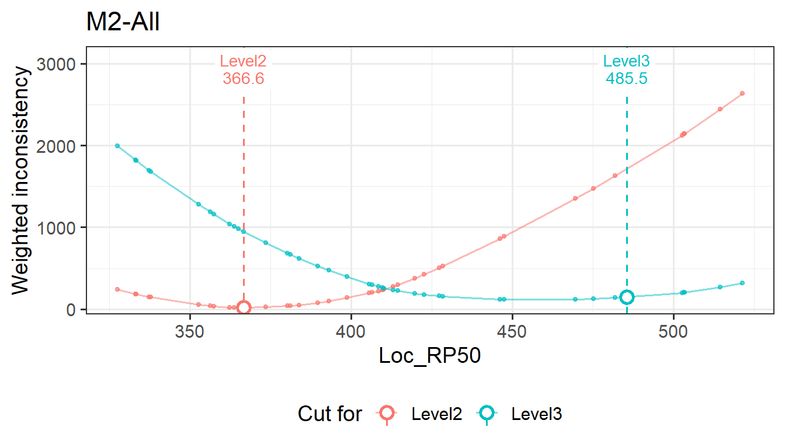

set.seed(7)
sim <- genFakeDataSet(ngca = 3, ntable = 2, npanelist = 4, cor_val = 0.7, nlevel = 3,
sdinp = 1, ecinp = 0, n = 40, 300, 500,
domains = c("Number", "Algebra", "Geometry"))
res <- emstans(data = sim, location = "Loc_RP50")
res
#> Embedded Standard Setting
#> method: ESS-Weight | location: Loc_RP50 | 3 unit(s)
#>
#> Modal cut scores (all tables):
#> M1-All Level2 346.300 Level3 467.700
#> M2-All Level2 366.600 Level3 469.600
#> M3-All Level2 406.800 Level3 503.300
#>
#> Use extract() for tables, report() for the full report.Setting cut scores manually
The ESS cut scores are a recommendation. A policy body may adjust them: to make cuts progress smoothly across grades, to adopt the panelists’ median instead of the modal cut, or to try a proposed value. update() replaces the modal cut scores of one or more units with values you give, and recomputes everything that depends on them. You can then compare the consistency and impact of the manual cuts with those of the estimated ones.
The notation follows How embedded standard setting works.
1 The study
The simulated study from Getting started: three grades, two tables of four panelists, 40 items per grade, and three levels.
The Level3 cut barely rises from M1 to M2 (467.7 and 469.6) and then jumps for M3 (503.3). A committee might prefer a smoother progression, with the M2 cut halfway between M1 and M3.
2 Using update()
Give one numeric vector per unit, named as in extract(res, "cutscore"), with one cut score per cut level, in increasing order:
mid <- mean(c(extract(res, "cutscore")[["M1-All"]][2], extract(res, "cutscore")[["M3-All"]][2]))
mid
#> [1] 485.5
res_man <- update(res, `M2-All` = c(366.6, mid))
res_man
#> Embedded Standard Setting
#> method: ESS-Weight | location: Loc_RP50 | 3 unit(s) | manual cuts: M2-All
#>
#> Modal cut scores (all tables):
#> M1-All Level2 346.300 Level3 467.700
#> M2-All Level2 366.600 Level3 485.500
#> M3-All Level2 406.800 Level3 503.300
#>
#> Use extract() for tables, report() for the full report.Several units can be updated in one call, in any order. Each unit needs exactly \(K - 1\) values. A unit name that doesn’t exist, the wrong number of values, or a cut above every item location is an error. To go back to the estimated cuts, use the original object or run emstans() again.
3 What is recomputed
For a unit with manual cuts \(\tilde c_2, \dots, \tilde c_K\):
- Pages. Each cut is placed before the first item at or above it: \(\tilde p_k = \min\{\, p : b_{(p)} \ge \tilde c_k \,\}\).
- Count and Weight. Both are evaluated at the cut score itself, \(C_k(\tilde c_k)\) and \(W_k(\tilde c_k)\). The count equals that of page \(\tilde p_k\), because no item lies between \(b_{(\tilde p_k - 1)}\) and \(\tilde c_k\). The weight is lower than at \(b_{(\tilde p_k)}\) whenever the profile is still falling there, since \(W_k\) is linear between item locations with slope \((p - n_{<k})/\sigma\) after page \(p\): \[ W_k(\tilde c_k) = W_k\big(b_{(\tilde p_k)}\big) - \frac{(\tilde p_k - 1 - n_{<k})\,\big(b_{(\tilde p_k)} - \tilde c_k\big)}{\sigma}. \]
- Empirical levels \(o_i = 1 + \#\{\, k : \tilde c_k \le b_i \,\}\), and from them the agreement, the crosstabs, the item review and the impact data.
The panelist cuts, the per-table modal cuts, the median and average cuts, and the inconsistency profiles stay as estimated. They describe the panelists’ judgements, which a manual cut does not change.
modal_all <- function(x, unit) {
m <- x$modal[x$modal$unit == unit & x$modal$table == "All", ]
m[, c("level", "page", "cut_score", "count", "weight")]
}
modal_all(res, "M2-All")
#> level page cut_score count weight
#> 11 2 12 366.6 2 16.6
#> 12 3 33 469.6 4 119.0
modal_all(res_man, "M2-All")
#> level page cut_score count weight
#> 11 2 12 366.6 2 16.6
#> 12 3 36 485.5 3 148.8The manual Level3 cut lies between two items. Its weight is below the weight at the next item’s location, as the formula in step 2 says:
4 The cost of a manual cut
The estimated cut minimizes the chosen criterion, so for the same criterion a manual cut can only add inconsistency:
\[ \Delta W_k = W_k(\tilde c_k) - W_k(\hat c_k) \ge 0, \qquad \Delta C_k = C_k(\tilde c_k) - C_k(\hat c_k) \ge 0 \]
under ESS-Weight and ESS-Count respectively. The other criterion can move either way. Here the manual Level3 cut has a larger weight, which ESS-Weight minimizes, but a smaller count:
The profile plot marks the manual cut on the profile:
plot(res_man, "profile", unit = "M2-All")
Because the cuts are ordered, the counts add up to the total level disagreement, \(\sum_k C_k(\tilde c_k) = \sum_i \lvert a_i - o_i \rvert\) (see What the minimum values add up to). Fewer inconsistent items therefore means higher agreement:
This is not a contradiction. ESS-Weight puts the cut so that the number of items below it matches the number aligned below the level, which need not minimize the number of misplaced items (see ESS-Weight is a quantile of the item locations).
5 Impact and item review
Impact changes only for the levels on either side of the changed cut:
imp <- function(x) {
s <- extract(x, "summary")
s[s$unit == "M2-All", c("level", "page_from", "page_to", "cut_score", "pct_in", "pct_at_above")]
}
imp(res)
#> level page_from page_to cut_score pct_in pct_at_above
#> 4 Level1 1 11 NA 24.5 100.0
#> 5 Level2 12 32 366.6 46.6 75.5
#> 6 Level3 33 40 469.6 28.8 28.8
imp(res_man)
#> level page_from page_to cut_score pct_in pct_at_above
#> 4 Level1 1 11 NA 24.5 100.0
#> 5 Level2 12 35 366.6 53.4 75.5
#> 6 Level3 36 40 485.5 22.1 22.1The item review lists the items that the manual cuts place outside their aligned level:
rv <- extract(res_man, "review")
rv[rv$unit == "M2-All" & rv$status != "Consistent",
c("item_id", "page", "aligned", "operational", "location", "distance", "status")]
#> item_id page aligned operational location distance status
#> 50 M2_10 10 Level2 Level1 363.7 -2.9 Inconsistent
#> 54 M2_14 14 Level1 Level2 380.3 14.7 Inconsistent
#> 63 M2_23 23 Level3 Level2 409.8 -75.7 Inconsistent
#> 68 M2_28 28 Level3 Level2 422.7 -62.8 Inconsistent
#> 74 M2_34 34 Level3 Level2 475.2 -10.3 Inconsistentreport(res_man) shows all of this in the HTML report, with the manual units named in its header.
6 Another common choice: the panelists’ median
Instead of the modal cut, a committee may adopt the median of the panelists’ cuts:
md <- extract(res, "individual")$median
md <- md[md$table == "All", ]
med_cuts <- split(md$cut_score, md$unit)
med_cuts
#> $`M1-All`
#> [1] 347.5 458.2
#>
#> $`M2-All`
#> [1] 368.6 437.4
#>
#> $`M3-All`
#> [1] 410.1 509.9
res_med <- do.call(update, c(list(res), med_cuts))
summary(res_med)
#> unit cut_level modal median average agreement weighted_kappa
#> 1 M1-All Level2 347.50 347.50 347.59 0.875 0.871
#> 2 M1-All Level3 458.25 458.25 455.90 0.875 0.871
#> 3 M2-All Level2 368.60 368.60 371.79 0.775 0.779
#> 4 M2-All Level3 437.45 437.45 446.98 0.775 0.779
#> 5 M3-All Level2 410.10 410.10 407.35 0.750 0.737
#> 6 M3-All Level3 509.90 509.90 503.06 0.750 0.737Here the modal and median columns show the same values, because the modal cuts were replaced by the medians.